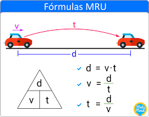
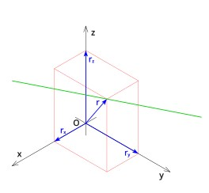

Movimiento rectilíneo uniforme
El Movimiento Rectilíneo Uniforme (MRU) es un tipo de movimiento en el cual un objeto se desplaza
en línea recta con velocidad constante. Se diferencia de otros tipos de movimiento porque la magnitud
y la dirección de la velocidad del objeto no cambian con el tiempo.
Las fórmulas del movimiento rectilíneo uniforme contempla tres incógnitas: Velocidad constante (V),
Distancia (d) y Tiempo (t). La fórmula principal teniendo de incógnita la velocidad
constante es la siguiente:
Velocidad= distancia/tiempo.
La velocidad constante, por lo tanto es el cociente entre la distancia recorrida y el tiempo empleado.
Por ejemplo, si se quiere determinar la velocidad de un carro que recorre 7500 metros (distancia)
en 300 segundos (tiempo), dividimos 7500 por 300 que da como resultado 25 metros por segundo (velocidad).

Movimiento Rectilíneo Uniforme (MRU)
Movimiento rectilíneo uniformemente variado
Como su nombre indica, es un tipo de movimiento rectilíneo uniformemente variado,
es decir el móvil se desplaza en una trayectoria recta y su velocidad varia de
manera uniforme o constante en cada unidad de tiempo que transcurre, ya sea
aumentando o disminuyendo, esto gracias a la acción de la aceleración.
d = 1/2.a.t2 Esta fórmula sirve especialmente cuando el móvil
parte del reposo aumentando la velocidad uniformemente (uniformemente acelerado)
d = Vi.t+1/2.a.t^2 Esta fórmula se usa particularmente cuando el
movimiento es uniformemente variado partiendo de cierta velocidad inicial distinta de 0.
Un ejemplo de este tipo de movimiento es el de caída libre vertical,
en el cual la aceleración que interviene, y considerada constante,
es la que corresponde a la gravedad.
Desde el punto de vista de la dinámica, también puede definirse como
el movimiento que realiza una partícula que partiendo del reposo es
acelerada por una fuerza constante.

Movimiento Rectilíneo Uniformemente Variado (MRUV)
Calcular Velocidad Final (v_f = v_0 ± at)
Calcular Aceleración (a = (v_f - v_0) / t)
Calcular Posición (e = v_0 t ± ½at²)